| 日付 | 2016年3月21日（月） |
|---|---|
| 山域 | 安蘇山塊 |
| メンバー | 家族（妻、長女・5歳、長男・2歳） |
| 山行形態 | 子連れ日帰り |
| アクセス | 車 |
| ルート (Map) | 日吉神社 (9:09) - (10:18) 二番岩 - (11:01) 岩山 (11:56) - (12:33) 車道 - (13:21) 日吉神社 |
2009年に岩山というシンプルな名前の山に登った。
簡単な岩場が連続する結構面白い山だった記憶があり
7年振りに、今回は家族を連れて登ってみることにする。
日吉神社前の駐車場に車を停める。標高180m。
神社にお参りしてから登山を開始することにする。
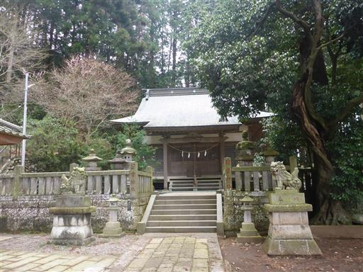
神社の狛犬にはなぜか鶏冠のようなものがある。
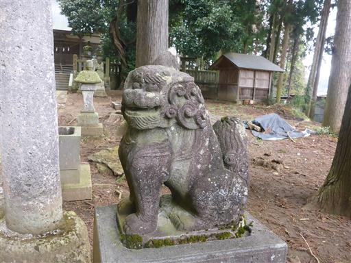
神社のすぐ側が登山道入口だ。
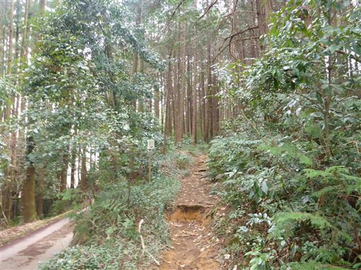
ほとんど文字が消えていて役に立たない地図が置かれている。
絵が適当すぎて、文字が書かれていても役に立たないかもしれない…
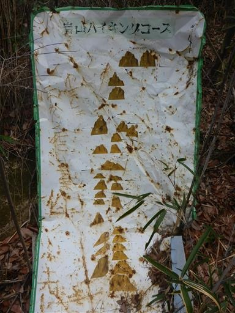
林の中に続く緩やかな登山道をしばらく歩くと、
最初の岩場に到着する。
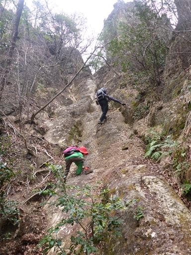
岩が削られて階段状になっているため、見た目より簡単に登ることができる。
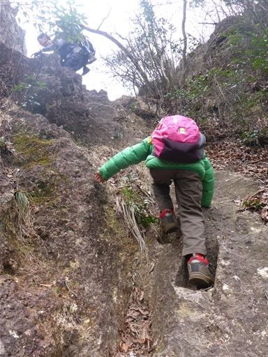
一登りで展望の良い岩場に到着する。
崖に囲まれた岩の上にベンチが固定されている。
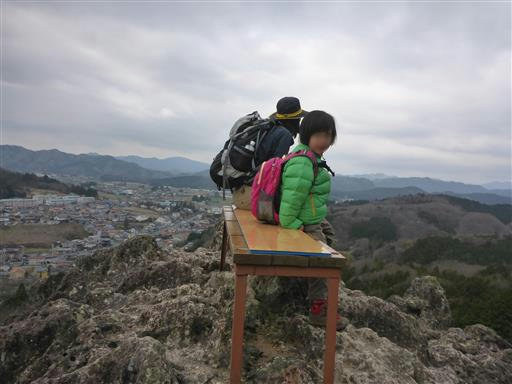
登ったり下ったり、岩場が続く。
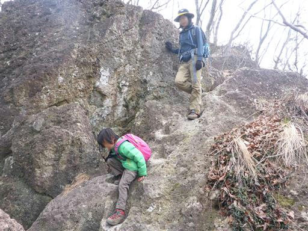
岩場をよじ登る。アスレチックみたいで娘は楽しんでいる。

垂直の岩の部分は梯子が設置されている。
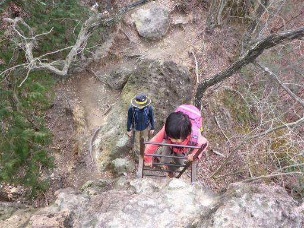
再び下る。傾斜は緩やかだが、落ちると危険なため慎重に下る。
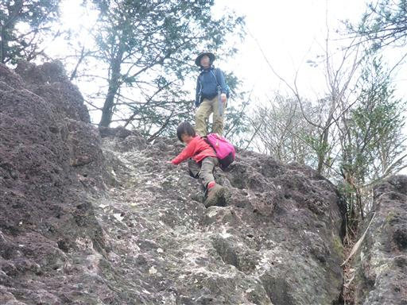
小さい岩場だが今回の登山で一番難しかった岩場。
息子を背負っているため、重くてなかなか体が上がらなかった。
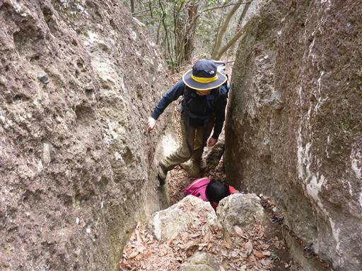
新緑にはまだ早いが芽が膨らみ始めている。
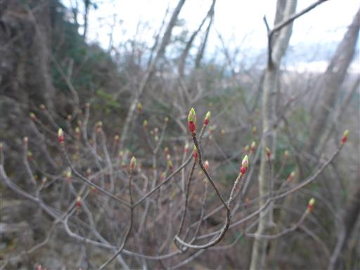
二番岩に到着。ずっと岩場続きだが、一応3番岩、2番岩、1番岩と名前が付けられている。
1番岩が岩山の山頂だ。
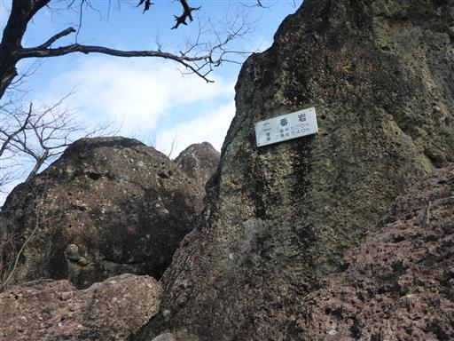
椿の花があちらこちらで見られる。自生しているのだろうか？

山頂に続く最後の長い岩場。
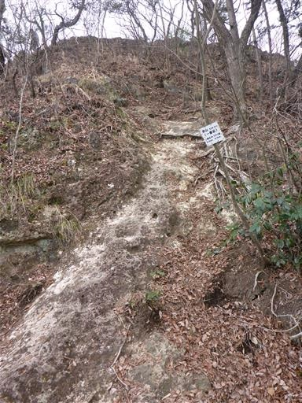
岩山の山頂に到着。標高328m。
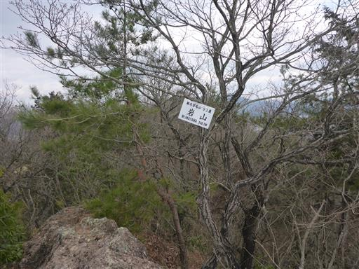
山頂は狭いが混雑していないため、昼食をとるスペースくらいはある。
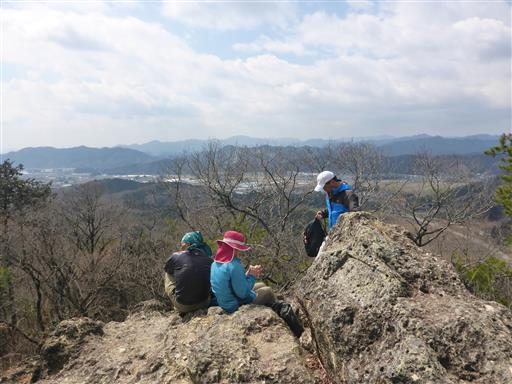
山頂からの景色。目の前に見えるのは二股山だ。
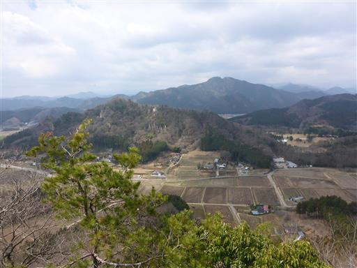
それなりに視界は広がるが、目立った山は無く低山が広がっている。
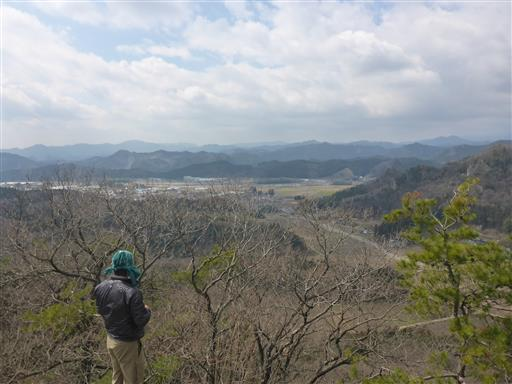
山頂から猿岩を下って下山するルートがあるが危険なため、
少し戻って別ルートを下ることにする。
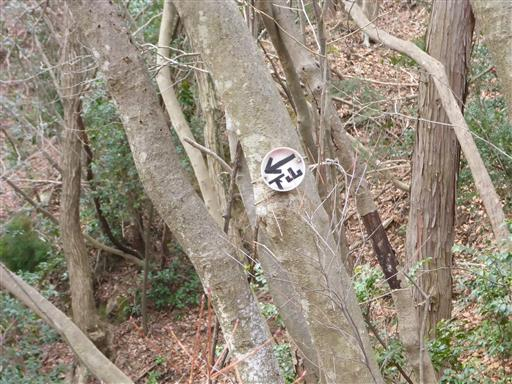
下に続く道はすごい急斜面で歩きやすそうな道には見えない。
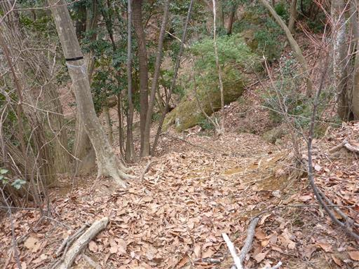
慎重に歩いたが、ずるずると下に滑り落ちてしまう。
傾斜が急で地面はかなり滑りやすい土、そして捕まる所も乏しい。
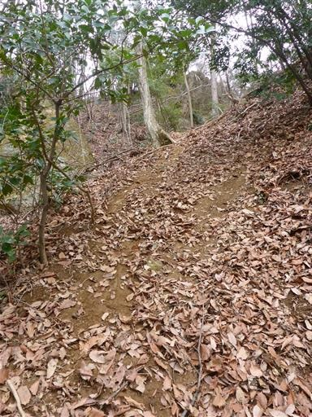
道は全般的に荒れている。あまりこの道は使われていないようだ。
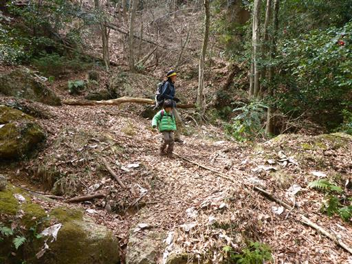
下山して車道に出て来る。車道から山を眺めても、とても登山道があるようには見えない。
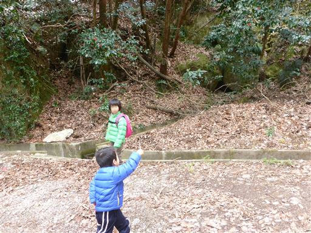
あとはゴルフ場の側の道を歩いて駐車場を目指す。
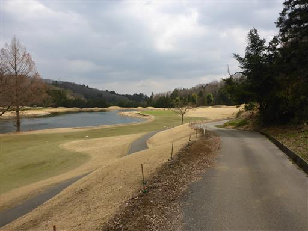
梅の花が咲いている。
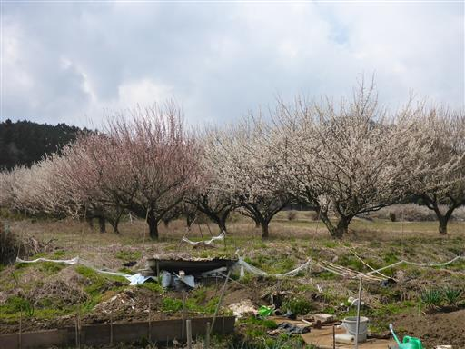
足元にはタンポポが咲いていて、春らしい景色が広がる。
岩山は簡単な岩場続きで、子供でも楽しめる山だったが
最後の下山に選んだ道は大失敗だった。
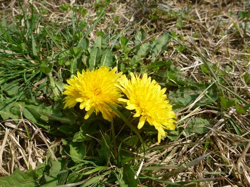